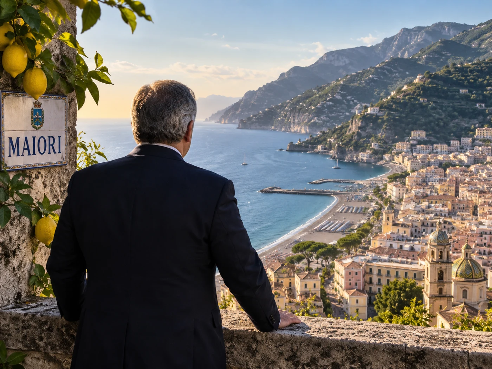

Dario Scannapieco non è un ministro. Non partecipa al Consiglio dei ministri e non deve difendere una legge di bilancio in Parlamento. Eppure, quando una priorità del governo deve diventare finanziamento, partecipazione, garanzia o investimento, il suo nome compare sempre più spesso accanto a quello di Giorgia Meloni.
La sua riconferma alla guida di Cassa Depositi e Prestiti nel 2024 è formalmente un normale passaggio societario. Politicamente racconta qualcosa di più: il tecnico scelto da Draghi non viene semplicemente conservato, ma accolto nell'architettura economica del nuovo governo. Per capire perché, bisogna partire dall'uomo, dalla sua formazione e dal modo in cui ha costruito la propria affidabilità.
L'uomo che torna sempre a Maiori
Prima che Mario Draghi riconoscesse il talento di Dario Scannapieco, nella sua famiglia c'era già stato qualcuno capace di riconoscere quello degli altri. Il nonno Domenico Scannapieco, conosciuto in Costiera amalfitana come don Mimì e solito firmarsi Mimisca, fu corrispondente da Amalfi per Roma e Il Giornale d'Italia. Fu lui a intuire le qualità del giovane Gaetano Afeltra e a presentarlo alla redazione di Roma, aprendogli la porta dalla quale sarebbe iniziata una grande carriera giornalistica.
Dario Scannapieco nasce a Roma il 18 agosto 1967, figlio di Alfonso, in una famiglia profondamente legata a Maiori. Cresce nella capitale, ma la Costiera rimane il luogo delle radici, delle vacanze e del ritorno. È un legame che resiste agli anni trascorsi nei ministeri, a Harvard e nelle istituzioni europee. Chi gli è vicino racconta che immagina il proprio ritiro su una piccola barca, tra Salerno e Punta Campanella.

La sua immagine pubblica è coerente con questa continuità. Sorride, parla con calma e trasmette insieme tranquillità e autorevolezza. Il Foglio lo ha descritto come molto diplomatico, estroverso nel carattere ma riservato nel lavoro. Ha modi composti, un'eleganza quasi novecentesca e l'aria di una persona che non ha bisogno di alzare la voce per essere ascoltata.
È facile immaginarlo lontano dalle sale dei consigli di amministrazione, su una spiaggia della Costiera con una parmigiana di melanzane portata da casa. Non è un'informazione biografica, ma l'immagine restituisce il personaggio: internazionale senza diventare estraneo alla propria terra, rigoroso senza essere freddo, autorevole senza avere bisogno di mostrarsi distante.
La sua calma non va confusa con l'assenza di ambizione. Scannapieco appare come un uomo che stabilisce una meta e organizza la propria vita per raggiungerla. Non rivendica continuamente il proprio valore: lo rende evidente attraverso ciò che riesce a portare a termine. È questa affidabilità, prima ancora del curriculum, a spiegare perché persone appartenenti a stagioni politiche differenti abbiano continuato ad affidargli incarichi sempre più delicati.
La lettera che arrivò a Mario Draghi
Dopo il liceo scientifico ai Parioli, si iscrive alla Libera Università internazionale degli studi sociali Guido Carli (LUISS) e si laurea con lode in Economia nel 1992. Comincia a lavorare nella pianificazione e nel controllo strategico della Società italiana per l'esercizio telefonico (SIP), poi Telecom Italia. È il primo contatto con una grande infrastruttura nazionale e con il rapporto tra impresa, tecnologia e interesse pubblico.
Decide quindi di frequentare un Master in Business Administration (MBA) ad Harvard. Durante quegli anni matura una scelta precisa: vuole mettere le competenze finanziarie al servizio dello Stato italiano. Per cinque dollari acquista il diritto di utilizzare il marchio di Harvard sulle buste e scrive a Romano Prodi, Carlo Azeglio Ciampi, Antonio Fazio e Mario Draghi. I compagni lo prendono in giro. Draghi, allora direttore generale del Tesoro, gli risponde.
Nell'estate del 1997, meno di settantadue ore dopo la cerimonia conclusiva del master, Scannapieco entra a ventinove anni nel Consiglio degli esperti del Tesoro. Si occupa di privatizzazioni, cartolarizzazioni e finanza pubblica; tra i primi grandi dossier incontra la vendita di Telecom Italia. Rimane al Tesoro per cinque anni, con un ritmo di lavoro che le ricostruzioni biografiche descrivono come quasi privo di interruzioni. Perfino il viaggio di nozze dura soltanto tre giorni.
Nel 2002 Giulio Tremonti lo nomina direttore generale Finanza e privatizzazioni. Ha trentacinque anni. Entra nel consiglio di amministrazione di Finmeccanica, segue dossier come Alitalia e lavora, nel corso della sua esperienza ministeriale, con Carlo Azeglio Ciampi, Giuliano Amato, Giulio Tremonti, Domenico Siniscalco e Tommaso Padoa-Schioppa. Governi e ministri cambiano; la sua funzione rimane.
La scuola europea
Nel 2007 il governo italiano lo indica come vicepresidente della Banca europea per gli investimenti (BEI). Il mandato viene rinnovato nel 2013 e nel 2019. Dal 2012 al 2021 presiede anche il Fondo europeo per gli investimenti (FEI), il braccio del gruppo BEI specializzato nel sostegno alle piccole e medie imprese e nel capitale di rischio.
In Lussemburgo Scannapieco impara a operare in una dimensione diversa da quella del Tesoro. Non basta amministrare denaro pubblico: bisogna usarlo per ridurre il rischio di un progetto, coinvolgere banche e investitori e ottenere un volume di investimenti superiore alle risorse iniziali. L'esperienza del Piano Juncker gli mostra che il valore del capitale pubblico non coincide soltanto con la sua quantità, ma con ciò che riesce a mettere in movimento.
È una scuola tecnica e insieme politica. Alla BEI deve mediare tra governi, istituzioni dell'Unione europea, banche nazionali di promozione e mercati. Costruisce relazioni senza trasformarle in esposizione personale. Quando Draghi lo richiama in Italia nel 2021, Scannapieco conosce ormai dall'interno sia la macchina finanziaria dello Stato sia quella europea.
Lo strumento che aspettava
Nel maggio 2021 Mario Draghi lo porta alla guida di CDP. Per Scannapieco è il punto nel quale le esperienze precedenti finalmente convergono. Al Tesoro ha imparato a conoscere partecipazioni, privatizzazioni e debito pubblico; alla BEI e al FEI ha imparato a trasformare una risorsa pubblica limitata in una capacità di investimento molto più ampia.
Alla CDP trova ciò che ogni grande filantropo della finanza vorrebbe poter dirigere: il risparmio postale degli italiani, il capitale dello Stato, partecipazioni industriali, fondi, credito, garanzie e un rapporto diretto con amministrazioni, banche e investitori internazionali. Non inventa questa macchina. Ne comprende però la potenza e si trova finalmente seduto davanti a tutti i suoi comandi.
La Cassa che riceve non è più la vecchia istituzione incaricata soprattutto di finanziare enti locali e opere pubbliche. La trasformazione in società per azioni del 2003, il Fondo Strategico Italiano, l'ingresso di nuove partecipazioni e il piano 2019-2021 guidato da Fabrizio Palermo avevano già ampliato enormemente il suo raggio d'azione. Il piano di Palermo dichiarava l'ambizione di passare da finanziatore a partner delle imprese, promotore delle infrastrutture e gestore delle partecipazioni strategiche.
Scannapieco compie il passaggio successivo. Considera l'intero bilancio come una macchina di trasformazione finanziaria. Il capitale di CDP deve intervenire dove il mercato da solo non arriva, assorbire una parte del rischio, attirare altri investitori e misurare l'effetto complessivo prodotto. La domanda non è più soltanto quanto denaro sia stato erogato, ma quanti investimenti quel denaro sia riuscito a sostenere.
Il Piano strategico 2022-2024 prevedeva 65 miliardi di risorse impegnate e 128 miliardi di investimenti sostenuti. Alla fine del biennio 2022-2023 CDP aveva già impegnato oltre 50 miliardi e sostenuto 133 miliardi di investimenti. Il risultato definitivo, pubblicato nel 2025, arriva a 75 miliardi di risorse e 202 miliardi di investimenti sostenuti: 2,7 euro messi in movimento per ogni euro impegnato.
Questi numeri non significano che CDP garantisca integralmente 202 miliardi con 75. Gli investimenti sostenuti comprendono anche il capitale degli altri soggetti entrati nelle operazioni. Proprio qui si trova il metodo: CDP non deve finanziare tutto; deve occupare il punto nel quale il proprio intervento rende possibile quello degli altri.
Il funzionamento finanziario e proprietario della Cassa, e il confronto con l'Istituto per la ricostruzione industriale (IRI), sono stati ricostruiti nel precedente dossier CDP, Cassa Depositi e Prestiti: la rinascita dell'IRI?. Qui interessa l'uomo che ha ricevuto quello strumento e il modo in cui lo ha reso disponibile alla strategia dello Stato.
Il 2024 e l'istituzionalizzazione
Il consiglio di amministrazione nominato il 27 maggio 2021 aveva un mandato di tre esercizi, fino all'approvazione del bilancio 2023. La durata triennale non era stata costruita per Scannapieco: era già la forma utilizzata con i predecessori. Nel luglio 2024, alla scadenza naturale, l'assemblea nomina il nuovo consiglio fino all'approvazione del bilancio 2026 e il consiglio conferma Scannapieco amministratore delegato e direttore generale.
Sul piano societario è un rinnovo. Sul piano politico è una scelta. Giorgia Meloni avrebbe potuto sostituire l'uomo nominato durante il governo Draghi e affidare la maggiore istituzione finanziaria pubblica a un dirigente più vicino alla propria storia politica. Decide invece di confermarlo.
Non è una promozione progressiva e non è ancora la promessa di un futuro ministero. È l'istituzionalizzazione di una posizione: da oggi sei uno di noi. Il mandato colloca Scannapieco nell'orizzonte del governo fino al 2027 e gli permette di proseguire un lavoro del quale, prima del rinnovo, erano già visibili risultati e direzione.
Da quel momento tra Palazzo Chigi e CDP si consolida un'intesa movimentata da una forma particolare di socialismo italiano: la guida resta politica, gli strumenti operano sul mercato, ma il capitale pubblico viene indirizzato verso obiettivi considerati essenziali per la forza del Paese.
Dall'Italia verso l'esterno
È qui che la CDP di Scannapieco si distingue più chiaramente dalla fase precedente. Il Piano industriale 2019-2021 portava un titolo che ne riassumeva la prospettiva: Dall'Italia per l'Italia. La Cassa sosteneva imprese, infrastrutture e territori nazionali e aiutava le aziende italiane a esportare o a crescere all'estero.
Dal 2023 la posizione cambia. CDP non appare più soltanto accanto agli investitori o alle cordate che cercano capitale. Appare accanto al governo, nei luoghi in cui vengono stabilite le direttrici economiche e internazionali dell'Italia. Il capitale pubblico non serve più soltanto a difendere ciò che esiste dentro il Paese: accompagna le imprese partecipate verso punti strategici dell'energia, della difesa, della microelettronica, dello spazio, delle comunicazioni e dei mercati finanziari europei.
Spesso CDP non figura formalmente come acquirente. A comprare è una società che la Cassa controlla, partecipa o sostiene. Il governo apre il rapporto politico; l'impresa individua l'attività industriale; CDP contribuisce a garantire che capitale e capacità negoziale italiana siano sufficienti a guidare l'operazione.
La partecipazione in Euronext offre un esempio della continuità e del nuovo orientamento. L'ingresso di CDP Equity nel gruppo che controlla le principali borse europee era stato preparato prima di Scannapieco, nell'operazione con cui Euronext acquisì Borsa Italiana. Nel 2024 CDP Equity aumenta la propria quota al 7,8 per cento e rafforza la posizione tra gli azionisti stabili dell'infrastruttura finanziaria continentale. Nel 2025, grazie al voto maggiorato, i suoi diritti di voto superano il 22 per cento.
Nello stesso movimento si collocano la costruzione di poli paneuropei, il sostegno alle infrastrutture digitali e ai centri dati, le operazioni delle partecipate nell'energia e nelle infrastrutture sottomarine e l'apertura delle prime sedi CDP fuori dall'Unione europea, a Belgrado, Il Cairo e Rabat. La Cassa non aspetta più soltanto che gli investitori stranieri vengano in Italia. Accompagna il sistema italiano fuori dai confini.
La finestra finanziaria favorisce questa espansione. La percezione del rischio sovrano italiano è migliorata, lo spread si è ridotto rispetto alle fasi più difficili e diverse agenzie hanno promosso il merito di credito della Repubblica. La lunga durata media del debito rallenta la trasmissione dei tassi più elevati al costo complessivo. L'inflazione, pur aumentando il costo delle nuove emissioni e delle opere, riduce il peso reale del debito a tasso fisso già collocato e sostiene la crescita nominale delle entrate.
L'Italia non ha eliminato il proprio debito e il rapporto con il prodotto interno lordo resta molto elevato. Ha però reso più credibile la capacità di amministrarlo. Scannapieco utilizza questa maggiore prevedibilità come una finestra nella quale impegnare capitale per ottenere posizioni destinate a durare. Mentre altri Paesi europei affrontano crisi industriali, energetiche o fiscali, l'Italia investe nei punti dei quali quegli stessi Paesi avranno bisogno.
La stabilizzazione finanziaria non è il traguardo. È il momento nel quale passare all'offensiva.
I tavoli nei quali la politica diventa capitale
La riconferma del 2024 non vive isolata in un verbale societario. Il 13 giugno, prima ancora del rinnovo, Scannapieco partecipa a Borgo Egnazia al tavolo del Gruppo dei Sette (G7) dedicato a infrastrutture e investimenti in Africa, presieduto da Giorgia Meloni e Joe Biden. Il 28 luglio prende parte al Forum imprenditoriale Italia-Cina durante la missione della presidente del Consiglio a Pechino.
Il 26 gennaio 2025, durante la missione di Meloni in Arabia Saudita, firma accordi con partner sauditi per sostenere infrastrutture, energie rinnovabili e iniziative comuni in Africa. Il 20 giugno, al vertice Piano Mattei-Global Gateway presieduto da Meloni e Ursula von der Leyen, CDP e Servizi assicurativi del commercio estero (SACE) annunciano un finanziamento da 250 milioni di euro ad Africa Finance Corporation.
Il 5 agosto 2025 Scannapieco partecipa a Palazzo Chigi alla riunione sulla difesa presieduta da Meloni, insieme ai ministri competenti e ai vertici di Leonardo, Fincantieri, Ferrovie dello Stato, SACE e Invitalia. Sul tavolo ci sono gli strumenti europei per la difesa, gli investimenti a duplice uso civile e militare e il coordinamento delle grandi imprese pubbliche.
Questi appuntamenti non dimostrano un rapporto personale riservato e non costituiscono il censimento di tutti gli incontri tra i due. Mostrano però una regolarità istituzionale: Scannapieco compare quando una relazione politica deve diventare finanziamento, garanzia, infrastruttura o investimento.
La logica si ripete. Il governo stabilisce l'obiettivo, CDP mette a disposizione capitale e competenze, SACE copre una parte del rischio, le banche multilaterali e i fondi europei amplificano l'intervento, le imprese realizzano il progetto. Guardando il risultato finale, Palazzo Chigi e Cassa Depositi e Prestiti sembrano mossi da un'unica direzione.
Un solo direttore d'orchestra
Dal 2023 Cassa Depositi e Prestiti cambia posizione. Non la vediamo più soltanto accanto agli investitori, alle imprese o alle cordate che cercano capitale. La vediamo sempre più spesso accanto al governo, nei luoghi in cui vengono stabilite le direttrici economiche e internazionali dell'Italia.
Il governo individua i punti nei quali l'Italia deve tornare a pesare. Cassa Depositi e Prestiti costruisce le condizioni economiche necessarie per raggiungerli. Le società partecipate acquistano, investono e realizzano le operazioni. Banche, fondi e istituzioni internazionali vengono coinvolti per moltiplicare il capitale iniziale.
È questo incastro a produrre l'impressione di un solo direttore d'orchestra. Meloni stabilisce la direzione politica e apre gli spazi internazionali. Scannapieco valuta, finanzia e rende concretamente percorribile quella direzione. I due non occupano lo stesso ruolo e non si contendono la scena: proprio per questo le loro azioni sembrano parti della medesima partitura.
Il rapporto richiama, nella struttura economica e senza alcuna sovrapposizione tra i regimi politici, quello fra Mussolini e Alberto Beneduce.
Beneduce non era un uomo cresciuto nel fascismo. Era un matematico e statistico proveniente dal socialismo riformista, aveva collaborato con Francesco Saverio Nitti ed era stato ministro del Lavoro prima della marcia su Roma. Quando Mussolini lo scelse, aveva già contribuito alla nascita dell'Istituto nazionale delle assicurazioni (INA), creato il Consorzio di credito per le opere pubbliche (CREDIOP) e organizzato l'Istituto di credito per le imprese di pubblica utilità (ICIPU).
Aveva elaborato un modello preciso: istituzioni possedute dallo Stato, finanziate anche attraverso obbligazioni garantite dallo Stato, ma amministrate con criteri societari e affidate a tecnici. La proprietà rimaneva pubblica, mentre la gestione veniva sottratta alla burocrazia ordinaria e operava con gli strumenti del mercato.
Quando la crisi del 1929 travolse le grandi banche e le imprese italiane, Mussolini non affidò la soluzione a un dirigente di partito. Nel 1933 si rivolse a Beneduce, che costruì l'Istituto per la ricostruzione industriale (IRI), separò progressivamente le banche dalle imprese e pose sotto il controllo pubblico una parte enorme dell'apparato produttivo nazionale. Nel 1936 Beneduce presiedeva contemporaneamente l'IRI, il CREDIOP, l'ICIPU e l'Istituto per il credito navale: non era formalmente il ministro dell'Economia, ma amministrava gran parte degli strumenti attraverso i quali la politica economica diventava realtà.
Il precedente è significativo anche per un'altra ragione. Mussolini affidò una parte decisiva del potere economico dello Stato a un tecnico proveniente da una tradizione politica diversa, perché la sua competenza e i risultati ottenuti valevano più della sua appartenenza. Allo stesso modo Meloni, arrivata al governo, avrebbe potuto sostituire l'uomo scelto da Draghi. Decide invece di confermarlo, perché nella macchina dello Stato Scannapieco ha già dimostrato di sapere esattamente che cosa fare.
Le condizioni storiche e politiche sono incomparabili, ma la divisione delle funzioni presenta un'eco riconoscibile. Mussolini indicava gli obiettivi; Beneduce costruiva gli istituti finanziari capaci di realizzarli. Al primo apparteneva la rappresentazione politica, al secondo la costruzione silenziosa della macchina.
Anche Scannapieco non ha bisogno di assumere pubblicamente la guida politica. La sua forza consiste nel rimanere dietro, comprendere l'obiettivo e predisporre il capitale, le garanzie e le alleanze necessarie per raggiungerlo. Il suo carattere calmo, riservato e autorevole non è un elemento secondario del racconto: è precisamente ciò che gli consente di esercitare un potere enorme senza apparire in competizione con chi governa.
Qui si completa anche il significato di "il vero ministro delle Finanze": Scannapieco non formula pubblicamente la politica del governo, ma amministra la macchina che le permette di diventare realtà. E lo fa restando dietro, esattamente nel posto in cui il suo carattere lo aveva collocato fin dall'inizio.
Il posto che occupa già
Quando frequentava Harvard, Dario Scannapieco spese cinque dollari per poter utilizzare il marchio dell'università sulla carta da lettere. Con quelle buste scrisse alle personalità che considerava decisive per l'economia italiana. I suoi compagni lo prendevano in giro. Mario Draghi, allora direttore generale del Tesoro, gli rispose.
In quell'episodio c'è già quasi tutto il personaggio. Scannapieco non attende che qualcuno scopra per caso il suo valore. Individua la meta, cerca la strada per raggiungerla e, quando gli viene aperta una porta, dimostra di meritare quella possibilità. Da quel momento procede sempre nello stesso modo: parla poco, studia lo strumento che gli viene affidato e lascia che siano i risultati a renderlo necessario.
Draghi lo porta al Tesoro e, molti anni dopo, lo sceglie per guidare Cassa Depositi e Prestiti. Giorgia Meloni eredita quella scelta, la osserva alla prova dei fatti e decide di farla propria. La conferma del 2024 non rappresenta soltanto il rinnovo ordinario di un amministratore delegato. È il momento in cui un uomo proveniente dalla stagione tecnica di Draghi viene definitivamente accolto nella strategia politica del nuovo governo.
Il messaggio implicito è semplice: continua fino al 2027, perché ciò che stai costruendo coincide con ciò che vogliamo realizzare.
Da allora Scannapieco compare nei luoghi in cui l'Italia tenta di trasformare relazioni diplomatiche in posizioni economiche. È presente quando bisogna mobilitare capitale per l'Africa, finanziare infrastrutture, rafforzare una partecipata, attirare investitori internazionali o conquistare un punto strategico nei mercati europei. Non occupa il centro della fotografia e raramente pronuncia la frase destinata ai titoli dei giornali. Ma spesso è l'uomo che rende possibile ciò che la fotografia vuole rappresentare.
Forse, alla fine del mandato, qualcuno gli offrirà davvero un ministero. Sarebbe una conclusione coerente, ma rimane soltanto una possibilità. La domanda più interessante è se Scannapieco ne abbia bisogno.
Un ministro dispone di un bilancio sottoposto alla mediazione politica, deve difendere ogni scelta davanti al Parlamento e risponde quotidianamente alle tensioni della maggioranza. Alla guida di CDP, Scannapieco amministra una macchina alimentata da centinaia di miliardi di risparmio, capace di entrare nelle imprese, finanziare grandi opere, garantire investimenti e chiamare capitali da ogni parte del mondo. Può accompagnare la politica economica dello Stato senza doverne rivendicare pubblicamente la paternità.
È probabilmente il posto più adatto al suo carattere. Dietro il sorriso tranquillo, i modi gentili e l'aria rassicurante di un uomo di altri tempi rimane la determinazione di chi ha sempre saputo dove voleva arrivare. Non cerca di sovrastare il potere politico e non sembra interessato a sostituirlo. Gli basta sapere che, quando il governo decide di muoversi, la strada passa dalla macchina che dirige.
Poi rimane Maiori, il mare della Costiera e quella piccola barca sulla quale immagina un giorno di ritirarsi. È l'immagine privata di un uomo che ha trascorso la vita fra ministeri, banche, istituzioni europee e partecipazioni strategiche, senza perdere il legame con il luogo dal quale proviene.
Ma quel giorno sembra ancora lontano. Per il momento Scannapieco resta dov'è: abbastanza vicino a Giorgia Meloni da comprenderne la direzione, abbastanza lontano dalla scena da non contendergliela, abbastanza autorevole da non dover essere presentato a nessuno.
Dario Scannapieco non è il ministro dell'Economia e delle Finanze. Non partecipa al Consiglio dei ministri e non chiede voti al Parlamento. Eppure, quando l'Italia decide dove mettere il proprio denaro, quali imprese proteggere e quali posizioni conquistare nel mondo, la decisione passa sempre più spesso dalla sua scrivania. Forse il ministero che potrebbe attenderlo nel 2027 è soltanto la forma ufficiale di un lavoro che sta già svolgendo.
Fonti
- Sigismondo Nastri, Dario Scannapieco figlio della Costiera Amalfitana, Il Vescovado, 27 maggio 2021.
- Il Foglio, Perché Scannapieco alla BEI naviga il riflusso dello Stato padrone, 20 aprile 2018.
- Repubblica Affari e Finanza, Dario Scannapieco il Ciampi boy che coordinerà il piano Juncker, 16 novembre 2015.
- Cassa Depositi e Prestiti, Amministratore delegato e direttore generale Dario Scannapieco, profilo istituzionale.
- Marco Cecchini, Chi è Dario Scannapieco il nuovo e ambizioso capo di CDP, Il Foglio, 27 maggio 2021.
- Cassa Depositi e Prestiti, Piano industriale 2019-2021 Dall'Italia per l'Italia.
- Cassa Depositi e Prestiti, Risultati 2023 e avanzamento del Piano strategico 2022-2024, 4 aprile 2024.
- Cassa Depositi e Prestiti, Risultati 2024 e consuntivo del Piano strategico 2022-2024, 3 aprile 2025.
- Cassa Depositi e Prestiti, Assemblea e nomina del consiglio di amministrazione, 27 maggio 2021.
- Cassa Depositi e Prestiti, Assemblea del 15 luglio e conferma di Dario Scannapieco del 17 luglio 2024.
- Cassa Depositi e Prestiti, CDP Equity SFPIM e CDC aumentano la propria quota in Euronext, 8 marzo 2024; Relazione semestrale 2025 di CDP Equity.
- Rassegna stampa Confindustria Benevento, tavolo G7 su infrastrutture e investimenti in Africa, 13 giugno 2024.
- Agenzia Nova, Forum imprenditoriale Italia-Cina durante la missione di Giorgia Meloni, 28 luglio 2024.
- Cassa Depositi e Prestiti, Accordi con partner sauditi su rinnovabili infrastrutture e Africa, 26 gennaio 2025.
- Cassa Depositi e Prestiti, CDP e SACE 250 milioni ad Africa Finance Corporation nell'ambito del Piano Mattei, 20 giugno 2025.
- ANSA, Meloni incontra le industrie della difesa confronto sugli strumenti europei, 5 agosto 2025.
- Treccani, Alberto Beneduce, Dizionario Biografico degli Italiani; L'IRI dagli anni Trenta agli anni Settanta.